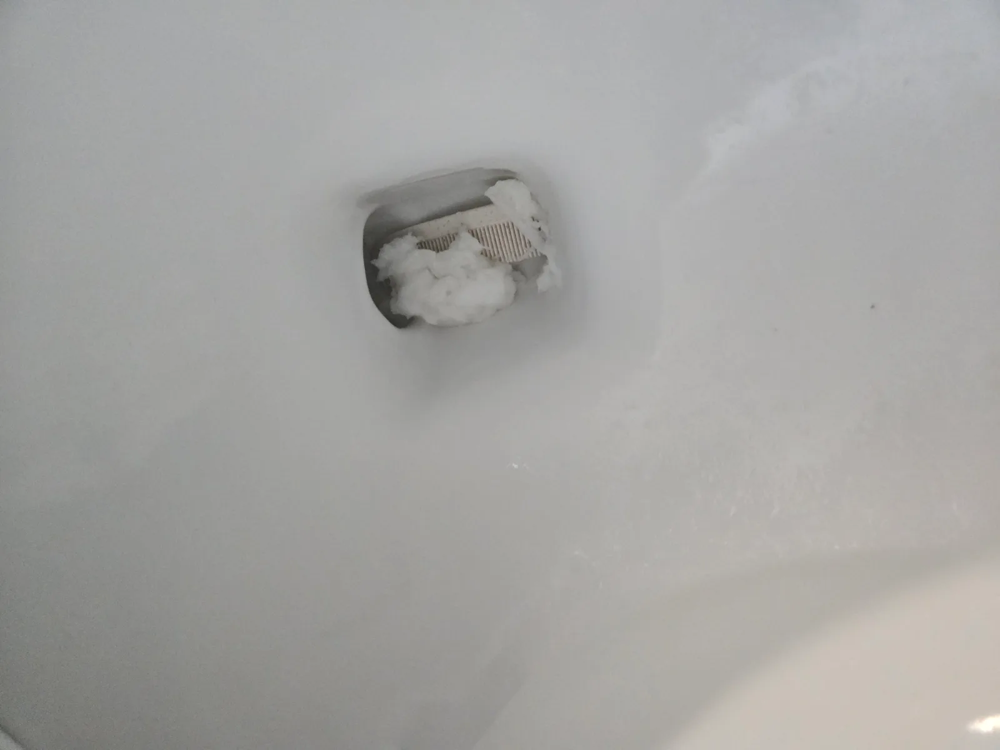

광진구 자양동 변기막힘, 현장 도착 후 진단
광진구 자양동에서 변기막힘이 발생했다는 긴급 연락을 받고 석션기와 변기 탈거 장비를 준비해 신속하게 출동했습니다. 변기막힘 전문 신라건축설비가 현장에 도착해 증상을 확인하고 석션, 변기 탈거, 에어건 작업을 단계별로 진행했습니다.
먼저 변기의 배수 상태를 점검한 뒤 산업용 석션기를 사용했습니다. 강한 흡입력으로 작업했지만 이물질이 움직이는 느낌만 있고 밖으로 빠져나오지 않았습니다.
작업 반응을 확인한 결과 길이가 있는 물체가 변기 내부 굴곡에 대각선으로 걸린 것으로 판단했습니다. 관통기를 무리하게 밀어 넣으면 이물질이 오수관 쪽으로 넘어가거나 변기 내부가 손상될 수 있어 탈거 작업으로 전환했습니다.
1단계: 증상 확인과 필요한 장비 작업
변기 주변을 보양하고 고정 부위를 분리한 뒤 변기를 안전하게 탈거했습니다. 하부 오수관을 점검한 결과 광진구 자양동 변기막힘의 원인은 오수관이 아니라 변기 자체의 내부 배관에 있었습니다.
탈거한 변기 내부를 확인했지만 굴곡 깊은 곳에 빗이 단단히 걸려 있어 손이나 일반 공구로는 꺼내기 어려웠습니다. 정확한 이물질 위치를 판단한 뒤 변기 하부에서 압축공기를 분사하는 에어건 작업을 시작했습니다.

2단계: 원인 구간 처리와 정상 작동 확인
탈거한 변기의 하부 배출구에서 내부 굴곡 방향으로 에어건을 사용했습니다. 한두 차례의 압력으로는 빗이 빠지지 않아 분사 방향과 압력을 조절하며 총 다섯 차례 작업했습니다.
다섯 번째 에어건 작업 끝에 변기 내부에 대각선으로 걸려 있던 플라스틱 빗이 휴지와 함께 빠져나왔습니다. 빗살 사이에 많은 양의 휴지가 엉켜 변기 배수 통로를 막고 있던 상태였습니다.
이물질을 완전히 제거한 뒤 변기를 원래 위치에 재설치했습니다. 여러 차례 물을 내려 통수시험을 진행하고 변기 물이 막힘 없이 시원하게 내려가는 것을 확인했습니다.

작업 결과와 재발 방지 안내
광진구 자양동 변기막힘의 원인은 변기 내부에 대각선으로 걸린 플라스틱 빗이었습니다. 석션으로 해결되지 않았지만 변기 탈거 후 에어건을 다섯 차례 정밀하게 분사해 빗과 휴지 덩어리를 안전하게 제거했습니다.
빗이나 칫솔, 면도기처럼 길고 단단한 생활용품이 변기에 들어가면 굴곡진 내부 배관에 걸려 심한 변기막힘을 일으킬 수 있습니다. 변기막혔을때 관통기를 무리하게 사용하면 이물질이 더 깊숙이 밀릴 수 있으므로 막힘 상태에 맞는 전문 장비와 작업 방법을 선택해야 합니다.
신라건축설비는 일반적인 휴지막힘부터 석션으로 해결되지 않는 생활용품 변기막힘, 변기 탈거, 에어건 작업과 오수관막힘까지 대응합니다. 작은 변기막힘부터 상가·오피스텔·대형건물의 공용배관막힘과 배관공사까지 가능한 막힘 전문업체입니다.
광진구 변기막힘, 자양동 변기막힘, 변기막혔을때, 빗 변기막힘, 생활용품 변기막힘, 석션작업 또는 변기 탈거가 필요하다면 신라건축설비가 서울·경기·인천 전 지역에 24시간 신속하게 출동해 당일 해결을 목표로 작업하겠습니다.
최종 조치: 산업용 석션기로 이물질 제거를 시도했지만 빗이 변기 내부에 대각선으로 걸려 빠지지 않았습니다. 변기를 탈거한 뒤 하부에서 에어건을 다섯 차례 분사해 빗과 엉켜 있던 휴지를 제거하고 변기를 재설치했습니다.
현장 방문 전 확인하는 비용과 작업 범위
신라건축설비는 현장 증상과 배관 구조를 확인한 뒤 필요한 작업과 예상 비용을 안내합니다. 단순 관통으로 해결되는지, 배관내시경·석션·고압세척 또는 변기 탈거가 필요한지는 현장 상태에 따라 달라집니다. 출장비와 야간 작업비, 추가 장비 비용이 발생할 수 있는 경우 작업 전에 먼저 설명하고 동의를 받은 범위에서 진행합니다.
업체를 선택할 때 확인할 사항
무조건적인 ‘0원’ 표현보다 실제 작업 범위, 추가 비용 조건, 사용 장비와 사후 대응 기준을 확인하는 것이 중요합니다. 해결되지 않았을 때의 비용 기준과 작업 후 동일 증상 발생 시 점검 범위를 사전에 문의해두면 불필요한 분쟁을 줄일 수 있습니다.
광진구 변기막힘 자주 묻는 질문
변기를 꼭 탈거해야 하나요?
광진구 자양동 변기의 물이 원활하게 내려가지 않고 변기 안에 고이는 증상이 발생했습니다. 단순한 휴지막힘처럼 보였지만 산업용 석션기로 작업해도 이물질이 빠지지 않아 변기 탈거가 필요한 상태였습니다.처럼 증상이 나타나더라도 원인은 현장마다 다를 수 있습니다. 장비와 배관 구조를 확인한 뒤 필요한 작업 범위를 안내합니다.
작업 전 비용을 알 수 있나요?
작업 전 증상과 현장 여건을 확인해 예상 범위와 비용을 먼저 안내합니다. 변기 탈거, 장비 추가 투입 또는 공용배관 작업이 필요한 경우 고객 동의 없이 임의로 진행하지 않습니다.
같은 증상이 다시 생기면 어떻게 하나요?
완료 후 정상 작동을 함께 확인하고 작업 범위에 따른 사후 안내를 드립니다. 동일 증상이 반복되면 현장 기록을 기준으로 원인을 다시 점검합니다.
변기막힘 서울·경기 출동지역
신라건축설비는 광진구 자양동 현장을 포함해 서울 25개 구와 경기도 31개 시·군의 배관 문제를 상담합니다. 현장 거리와 기사 배정 상황에 따라 출동 가능 여부를 먼저 안내드립니다.
서울 전 지역
강남구 · 강동구 · 강북구 · 강서구 · 관악구 · 광진구 · 구로구 · 금천구 · 노원구 · 도봉구 · 동대문구 · 동작구 · 마포구 · 서대문구 · 서초구 · 성동구 · 성북구 · 송파구 · 양천구 · 영등포구 · 용산구 · 은평구 · 종로구 · 중구 · 중랑구
경기도 주요 출동지역
수원시 · 용인시 · 고양시 · 화성시 · 성남시 · 부천시 · 남양주시 · 안산시 · 평택시 · 안양시 · 시흥시 · 파주시 · 김포시 · 의정부시 · 광주시 · 하남시 · 광명시 · 군포시 · 양주시 · 오산시 · 이천시 · 안성시 · 구리시 · 의왕시 · 포천시 · 양평군 · 여주시 · 동두천시 · 과천시 · 가평군 · 연천군